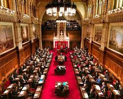

The Canadian government officially apologized for the residential school system in 2008.Some progress has been made in areas like language revitalization and land claims settlements.Many of the 94 Calls to Action from the TRC report have not been fully implemented, and progress has been slow in some areas.Some Indigenous communities continue to face issues related to land and resource rights, environmental concerns, and access to clean water.
The Canadian government has introduced and approached reconciliation with indigenous peoples through various policies, initiatives, and efforts over the years. The goals of reconciliation in Canada have primarily centered around addressing historical injustices, improving the well-being of indigenous communities, fostering cultural preservation, and promoting self-determination. While progress has been made, significant challenges and unmet goals remain. and this is the Canadian government's approach to reconciliation.
